Iran oil-export test: bets on a US invasion halved to 7.5% and a Kharg seizure to 4.2%, while a nuclear deal fades to 5%. Polymarket odds, hourly, last 30 days. Kharg Island handles most Iranian crude exports. Bets, not forecasts; blockade-loosening claims remain unconfirmed. Source: https://polymarket.com/event/will-the-us-invade-iran-before-2027
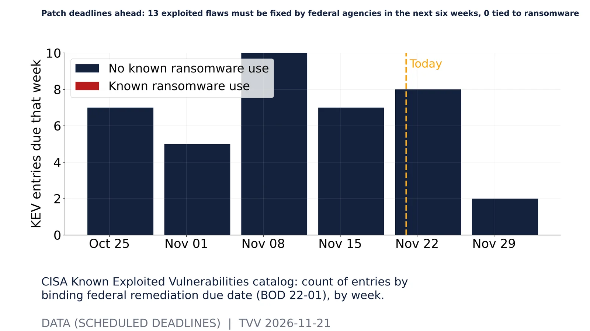
Patch deadlines ahead: 13 exploited flaws must be fixed by federal agencies in the next six weeks, 0 tied to ransomware. CISA Known Exploited Vulnerabilities catalog: count of entries by binding federal remediation due date (BOD 22-01), by week. Source: https://www.cisa.gov/known-exploited-vulnerabilities-catalog
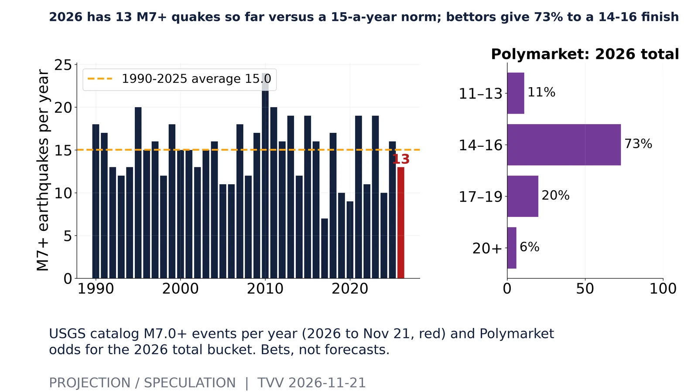
2026 has 13 M7+ quakes so far versus a 15-a-year norm; bettors give 73% to a 14-16 finish. USGS catalog M7.0+ events per year (2026 to Nov 21, red) and Polymarket odds for the 2026 total bucket. Bets, not forecasts. Source: https://earthquake.usgs.gov/earthquakes/search/
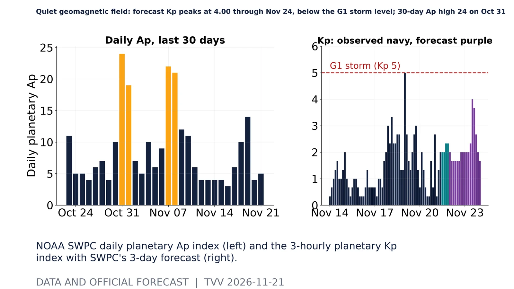
Quiet geomagnetic field: forecast Kp peaks at 4.00 through Nov 24, below the G1 storm level; 30-day Ap high 24 on Oct 31. NOAA SWPC daily planetary Ap index (left) and the 3-hourly planetary Kp index with SWPC's 3-day forecast (right). Source: https://services.swpc.noaa.gov/products/noaa-planetary-k-index-forecast.json
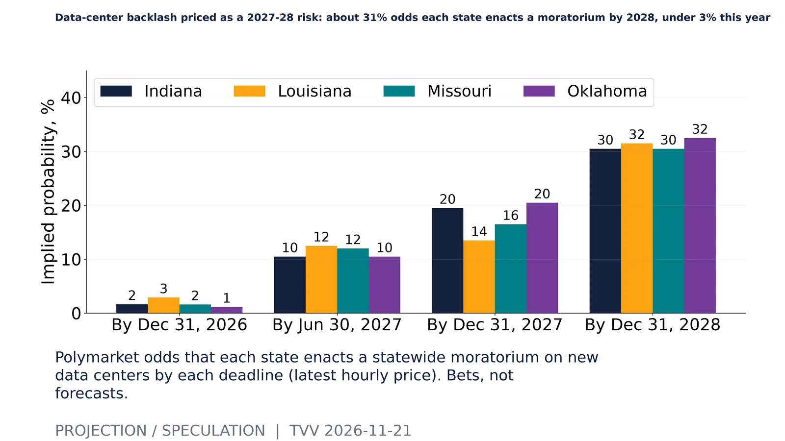
Data-center backlash priced as a 2027-28 risk: about 31% odds each state enacts a moratorium by 2028, under 3% this year. Polymarket odds that each state enacts a statewide moratorium on new data centers by each deadline (latest hourly price). Bets, not forecasts. Source: https://polymarket.com/event/indiana-enacts-data-center-moratorium-by-20260929
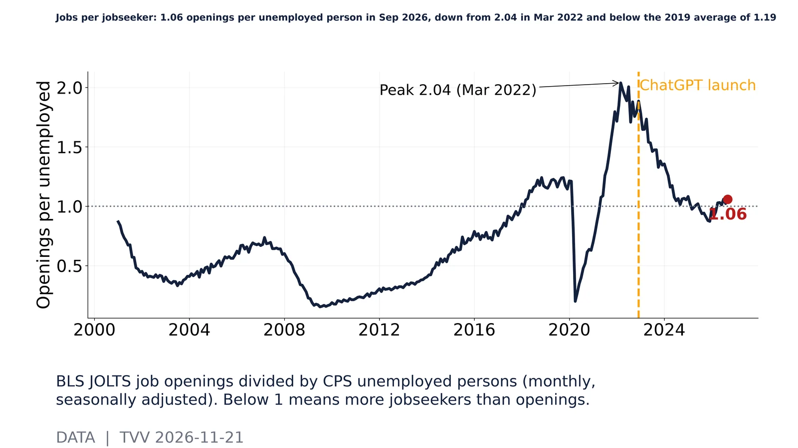
Jobs per jobseeker: 1.06 openings per unemployed person in Sep 2026, down from 2.04 in Mar 2022 and below the 2019 average of 1.19. BLS JOLTS job openings divided by CPS unemployed persons (monthly, seasonally adjusted). Below 1 means more jobseekers than openings. Source: https://fred.stlouisfed.org/series/JTSJOL
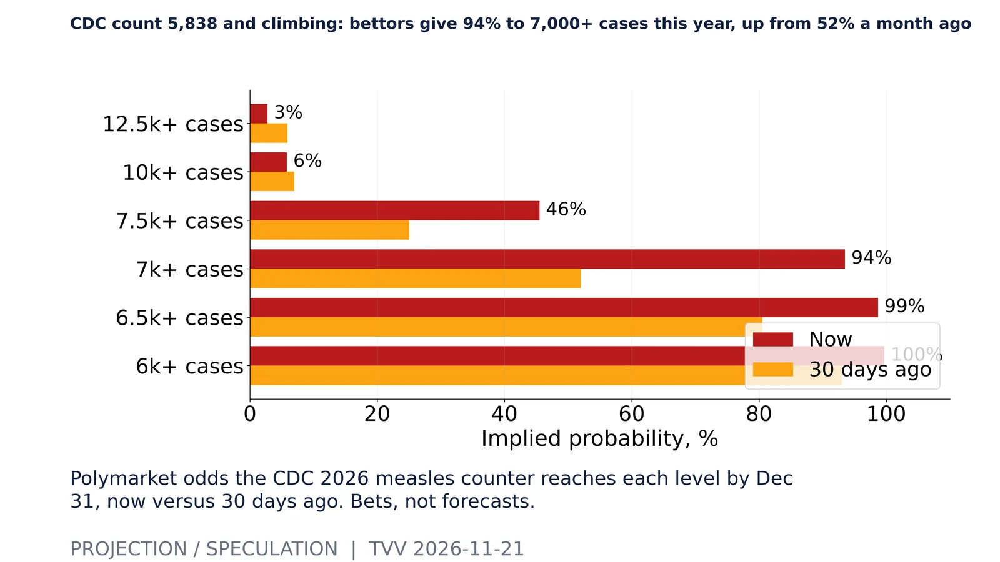
CDC count 5,838 and climbing: bettors give 94% to 7,000+ cases this year, up from 52% a month ago. Polymarket odds the CDC 2026 measles counter reaches each level by Dec 31, now versus 30 days ago. Bets, not forecasts. Source: https://polymarket.com/event/measles-cases-in-us-in-2026
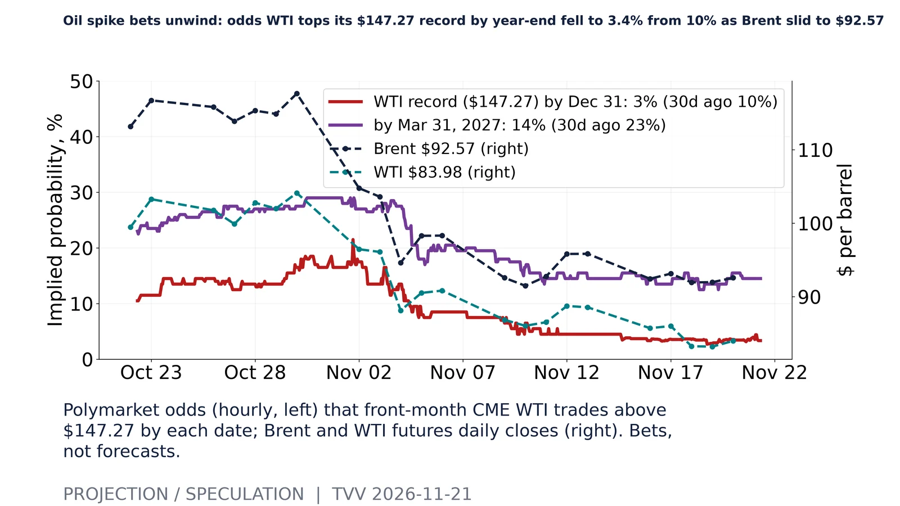
Oil spike bets unwind: odds WTI tops its $147.27 record by year-end fell to 3.4% from 10% as Brent slid to $92.57. Polymarket odds (hourly, left) that front-month CME WTI trades above $147.27 by each date; Brent and WTI futures daily closes (right). Bets, not forecasts. Source: https://polymarket.com/event/crude-oil-all-time-high-by
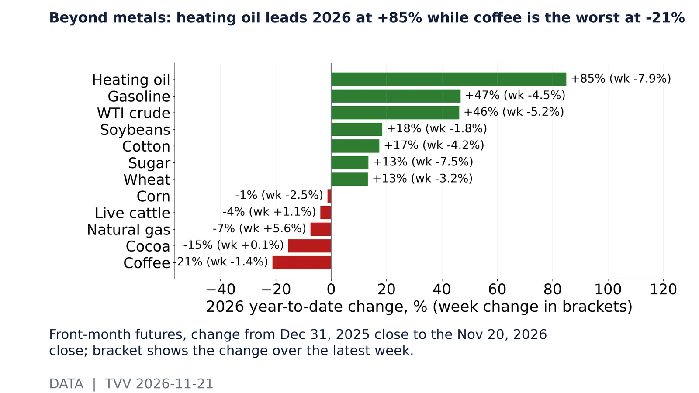
Beyond metals: heating oil leads 2026 at +85% while coffee is the worst at -21%. Front-month futures, change from Dec 31, 2025 close to the Nov 20, 2026 close; bracket shows the change over the latest week. Source: https://finance.yahoo.com/quote/CC%3DF/
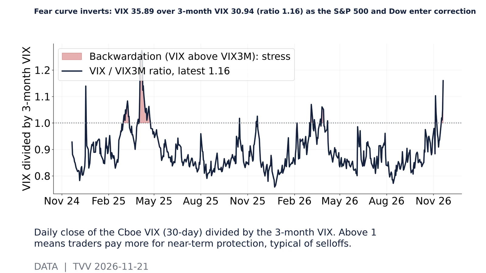
Fear curve inverts: VIX 35.89 over 3-month VIX 30.94 (ratio 1.16) as the S&P 500 and Dow enter correction. Daily close of the Cboe VIX (30-day) divided by the 3-month VIX. Above 1 means traders pay more for near-term protection, typical of selloffs. Source: https://finance.yahoo.com/quote/%5EVIX/
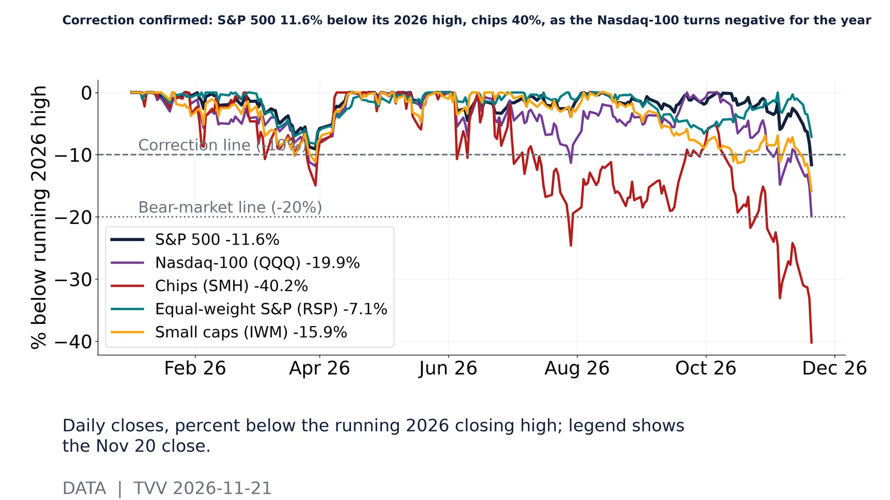
Correction confirmed: S&P 500 11.6% below its 2026 high, chips 40%, as the Nasdaq-100 turns negative for the year. Daily closes, percent below the running 2026 closing high; legend shows the Nov 20 close. Source: https://finance.yahoo.com/quote/%5EGSPC/
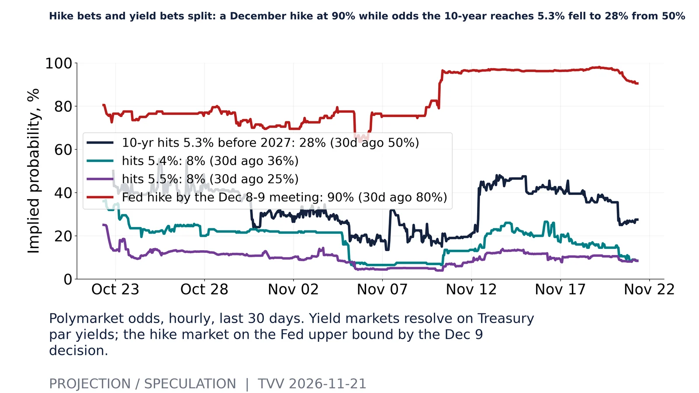
Hike bets and yield bets split: a December hike at 90% while odds the 10-year reaches 5.3% fell to 28% from 50%. Polymarket odds, hourly, last 30 days. Yield markets resolve on Treasury par yields; the hike market on the Fed upper bound by the Dec 9 decision. Source: https://polymarket.com/event/how-high-will-10-year-treasury-yield-go-before-2027
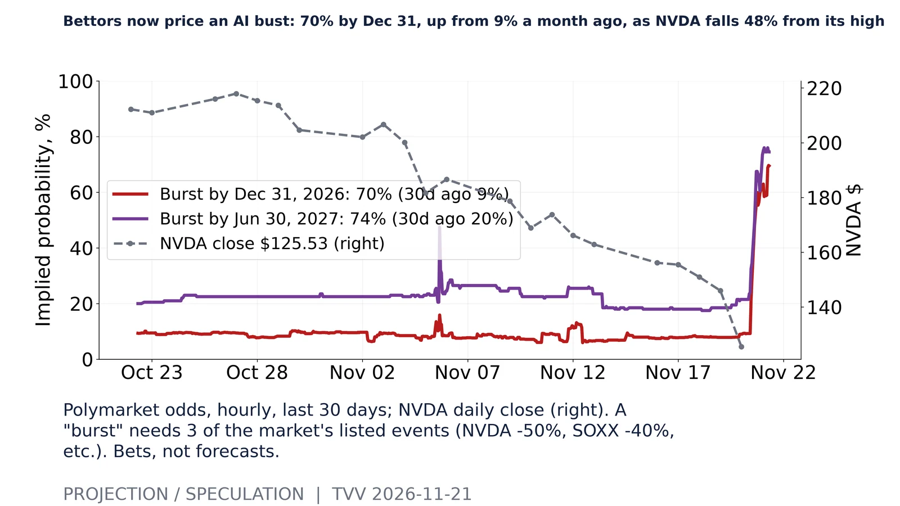
Bettors now price an AI bust: 70% by Dec 31, up from 9% a month ago, as NVDA falls 48% from its high. Polymarket odds, hourly, last 30 days; NVDA daily close (right). A "burst" needs 3 of the market's listed events (NVDA -50%, SOXX -40%, etc.). Bets, not forecasts. Source: https://polymarket.com/event/ai-bubble-burst-by
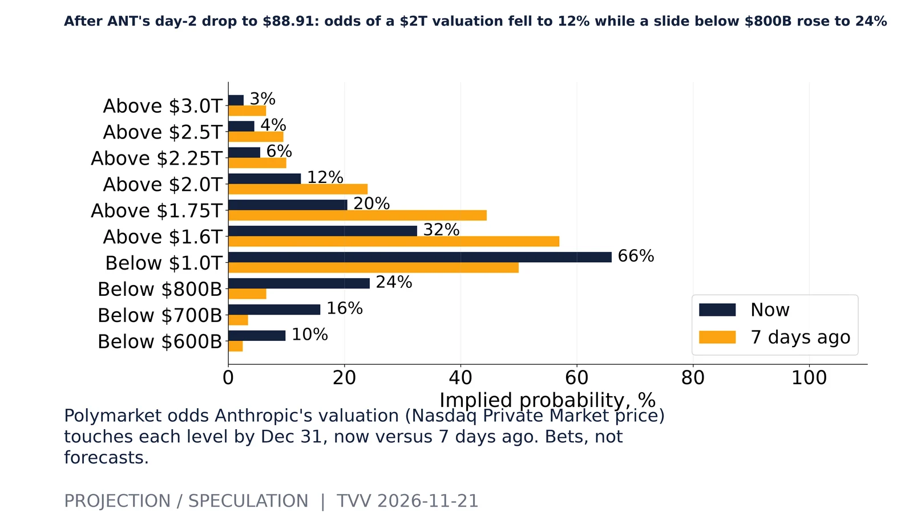
After ANT's day-2 drop to $88.91: odds of a $2T valuation fell to 12% while a slide below $800B rose to 24%. Polymarket odds Anthropic's valuation (Nasdaq Private Market price) touches each level by Dec 31, now versus 7 days ago. Bets, not forecasts. Source: https://polymarket.com/event/will-anthropics-valuation-hit-by-december-31
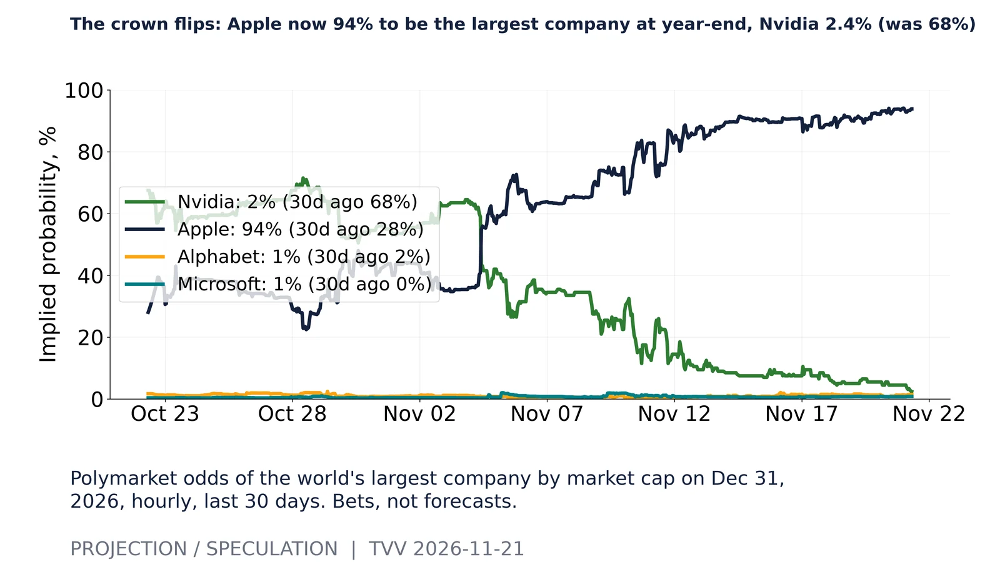
The crown flips: Apple now 94% to be the largest company at year-end, Nvidia 2.4% (was 68%). Polymarket odds of the world's largest company by market cap on Dec 31, 2026, hourly, last 30 days. Bets, not forecasts. Source: https://polymarket.com/event/largest-company-end-of-december-2026
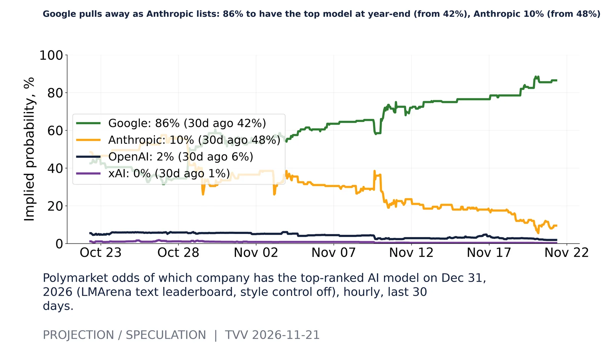
Google pulls away as Anthropic lists: 86% to have the top model at year-end (from 42%), Anthropic 10% (from 48%). Polymarket odds of which company has the top-ranked AI model on Dec 31, 2026 (LMArena text leaderboard, style control off), hourly, last 30 days. Source: https://polymarket.com/event/which-company-has-best-ai-model-end-of-2026
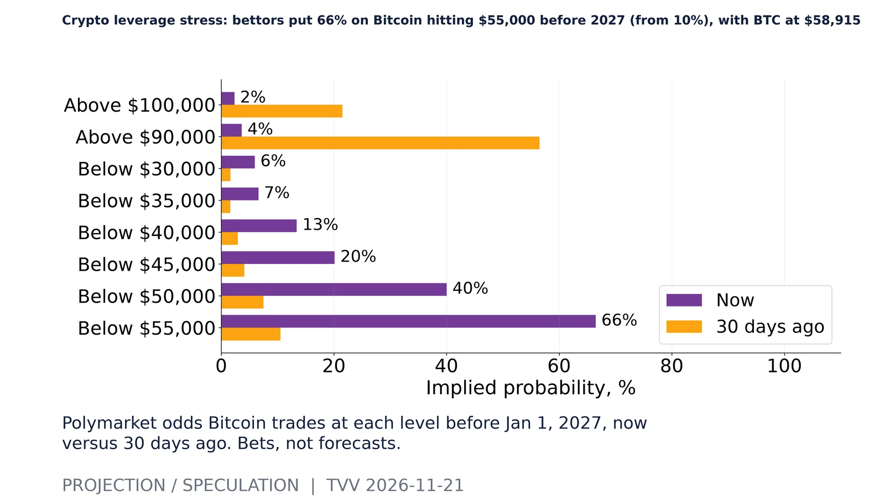
Crypto leverage stress: bettors put 66% on Bitcoin hitting $55,000 before 2027 (from 10%), with BTC at $58,915. Polymarket odds Bitcoin trades at each level before Jan 1, 2027, now versus 30 days ago. Bets, not forecasts. Source: https://polymarket.com/event/what-price-will-bitcoin-hit-before-2027
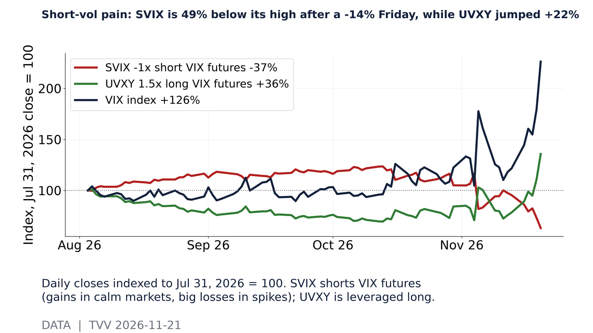
Short-vol pain: SVIX is 49% below its high after a -14% Friday, while UVXY jumped +22%. Daily closes indexed to Jul 31, 2026 = 100. SVIX shorts VIX futures (gains in calm markets, big losses in spikes); UVXY is leveraged long. Source: https://finance.yahoo.com/quote/SVIX/